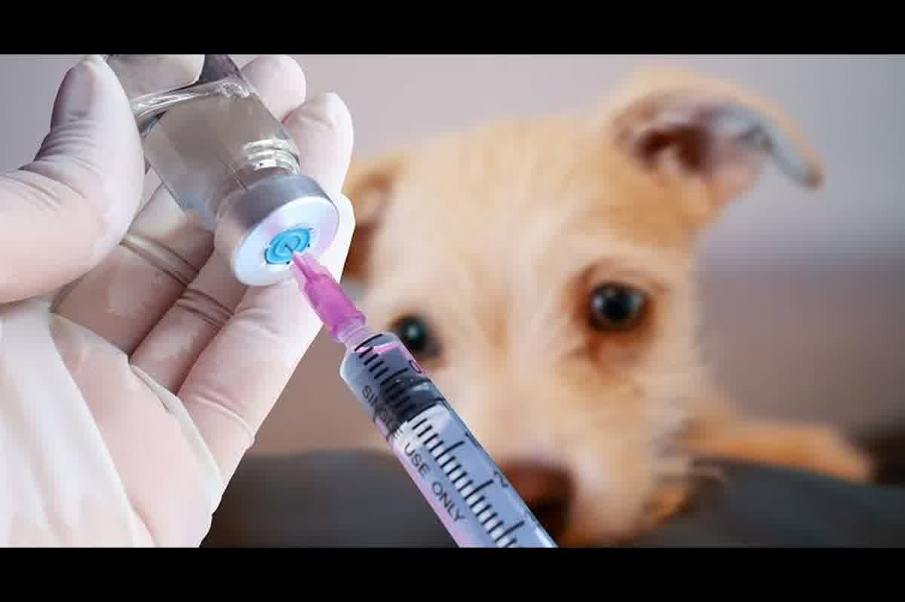
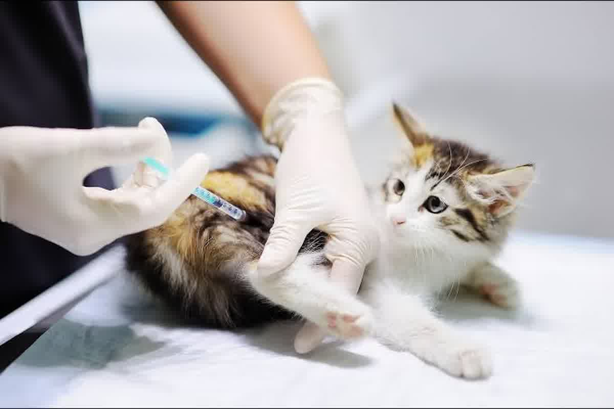

Chronologie technique du vaccin antirabique pour voyager depuis Trujillo, Pérou : 21 jours de validité UE, 30 jours pour RNATT, micropuce précédente et échecs qui redémarrent les protocoles.

L’erreur que l’on voit le plus en consultation est simple : on se fait vacciner après avoir acheté le billet. Lors des voyages internationaux, le vaccin antirabique n’est pas interprété comme un acte clinique isolé. Il fonctionne comme une date mère qui active les fenêtres réglementaires, les prélèvements en laboratoire et les certificats officiels. Dans cette logique, le vaccin antirabique pour voyager devient un point de contrôle et non une exigence décorative.
Le calendrier comporte deux seuils différents que l'on confond : 21 jours pour qu'une primovaccination soit valable pour voyager dans l'Union européenne et 30 jours pour qu'un prélèvement sérologique soit légalement admissible lorsque la destination impose un titrage. Les confondre ne produit pas « un petit ajustement ». Produit des redémarrages.
Le règlement (UE) 576/2013 établit qu'une primo-vaccination antirabique conforme aux exigences réglementaires internationales n'est valable pour les mouvements internationaux que 21 jours après son application. Le délai existe car la réponse immunitaire humorale n’apparaît pas le même jour chez tous les animaux. Dans la plupart des cas, les anticorps neutralisants deviennent détectables entre les jours 7 et 14 et atteignent des niveaux protecteurs entre 21 et 28 jours.
Le propriétaire lit généralement « 21 jours » comme règle de fenêtre. Ce n'est pas. Si vous vaccinez aujourd'hui et comptez voyager dans 10 jours, le problème n'est pas documentaire : l'animal est encore dans la fenêtre de sensibilité. C’est exactement ce que les cadres de soins de santé tentent de réduire à l’échelle de la population.
Avec les revaccinations pendant la période de validité, la logique change. Une revaccination effectuée avant la date d'expiration du vaccin précédent ne relance pas le délai d'attente de 21 jours, car la réponse anamnestique est rapide et la réglementation le reconnaît. Lorsque vous laissez la couverture expirer et que vous vous faites vacciner plus tard, la plupart des juridictions traitent cet acte comme une primovaccination et vous revenez au décompte complet.

Plusieurs destinations ne se contentent pas d’un carnet de vaccination. Ils nécessitent un test de titre d’anticorps neutralisants antirabiques, rapporté en UI/mL à l’aide de RFFIT ou FAVN, avec un seuil réglementaire ≥ 0,5 UI/mL. Dans ces cas-là, la date critique n’est pas le voyage, c’est le jour de la prise de sang.
Dans l’UE et dans d’autres cadres à forte demande, l’échantillon pour titrage doit être prélevé au moins 30 jours après la primo-vaccination. La différence avec le 21e jour est opérationnelle : un animal peut être « valide pour voyager » au 22e jour, mais son prélèvement ce jour-là produit un résultat sérologique légalement inadmissible. Le coût n'est pas théorique : l'extraction est répétée à partir du jour 30, le résultat est attendu et le planning décale des semaines.
Les États-Unis ont réformé leur système d'entrée des chiens et, depuis le 1er août 2024, le duo CDC/USDA exige une sérologie pour les pays à haut risque dans des délais précis. Ce qui se répète à la clinique, c'est le même schéma : vaccination faite « à temps » pour le passage, mais prélèvement fait trop tôt pour la norme qui l'impose réellement.
Certaines erreurs ne peuvent pas être corrigées en ajoutant des jours. Le plus coûteux est de vacciner avant d’implanter une puce électronique valide. Pour des destinations telles que le Royaume-Uni, l'Australie ou la Nouvelle-Zélande, un vaccin antirabique administré avant l'implantation d'une puce électronique n'est techniquement pas valide pour le processus d'importation. Le dossier est relancé : puce, nouvelle vaccination et tous les délais courent à nouveau.
Ce point n’est pas une préférence de Zoovet Travel. C'est la traçabilité. La puce électronique ISO 11784/11785 est l'identité sanitaire qui permet de relier un individu biologique à un acte vaccinal précis. Sans cette identité préalable, l’autorité de destination n’a aucun moyen d’attribuer ce vaccin à l’animal qu’elle inspecte des mois plus tard.
À Trujillo, au Pérou, la puce électronique apparaît généralement tardivement pour une raison : le propriétaire la considère comme un « extra ». Dans les mouvements internationaux, il se comporte comme une infrastructure. Lorsqu’il arrive en retard, il traîne le vaccin, traîne le RNATT et traîne tous les certificats construits dessus.
Vaccinez-vous et comptez 21 jours à compter du lendemain. Le compte commence le jour même de la demande. Sur les vols programmés à la limite, une mauvaise interprétation vous laisse hors du contrôle documentaire. Ce n’est pas un « malentendu » : c’est une date invalide dans un système binaire.
Programmez le RNATT en pensant que « si 21 jours se sont écoulés, c'est tout ». L'échantillonnage avant le 30e jour se comporte comme un résultat rejeté, même si le nombre final est élevé. Dans l’UE, le problème n’est pas la valeur UI/mL ; est l’éligibilité temporelle de l’échantillon.
Définissez si votre destination nécessite uniquement une validité administrative ou également un diplôme. Lorsque le pays demande le RNATT, le calendrier réel ne se mesure plus en semaines mais en mois, car des temps de laboratoire et, dans certaines destinations, des délais d'attente ultérieurs s'ajoutent à l'extraction. Planifier sans cette distinction est la recette la plus courante pour reprogrammer un voyage.
Vérifiez la validité réelle du médicament antirabique en fonction des critères de destination, et non sous l'étiquette du fabricant ou selon les coutumes locales. Le même certificat peut être accepté dans un pays et considéré comme expiré dans un autre en raison du calcul ou de la reconnaissance de la durée. Quand le destin considère votre revaccination comme une primo-vaccination, vous revenez à 21 jours même si l'animal a des années d'antécédents.
Décidez du jour de vaccination à l'envers : en partant de la date de départ et en remontant le nombre de jours que nécessite votre destination, en laissant la place à de réelles aléas cliniques. C'est la seule façon d'utiliser le vaccin antirabique lors d'un voyage comme outil de planification et non comme patch ultérieur. Lorsque la séquence est bonne, le reste du dossier est constitué sans friction.
Un jour mal compté ou un vaccin administré dans le désordre peut vous obliger à recommencer les protocoles et à décaler votre départ de semaines ou de mois. Zoovet Travel conçoit le calendrier clinique et documentaire autour du vaccin antirabique pour les voyages, depuis Trujillo au Pérou, et valide la séquence avec la destination avant de délivrer les attestations. Écrivez-nous par WhatsApp ou planifiez une consultation pour examiner les dates et les documents. La différence entre voyager et reprogrammer réside généralement dans une seule date bien placée.